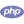

Web & Backend
Membangun aplikasi web dan API dengan ekosistem Laravel.
TERBUKA UNTUK KOLABORASI
Halo, saya Diki Ramdani — developer yang berfokus pada aplikasi web dengan Laravel dan PHP. Saya senang mengubah kebutuhan nyata menjadi sistem yang lebih rapi dan mudah digunakan.
01 — TENTANG SAYA
Saya tertarik membangun aplikasi yang membantu proses kerja menjadi lebih jelas dan efisien. Dari sistem berita acara hingga prototipe absensi, proyek-proyek saya berangkat dari kebutuhan yang nyata.
Fokus utama saya adalah backend dan aplikasi web menggunakan Laravel dan PHP, dengan perhatian pada alur kerja, integrasi, dan pengalaman pengguna.
Lihat proyek publik02 — KEAHLIAN
Teknologi yang saya gunakan untuk membangun website, aplikasi, dan API.

PHPMembangun aplikasi web dan API dengan ekosistem Laravel.
Menyusun tampilan web dan interaksi yang nyaman digunakan.
Mengenal integrasi aplikasi mobile dan terus memperluas kemampuan.
SKILL ANALYTICS
Menghitung teknologi publik…
MINI GAME / 01
Makan byte, kumpulkan skor, jangan sampai menabrak!
Tekan Mulai untuk bermain.
Game berjalan langsung di browser dan tidak mengirimkan data permainan ke mana pun.
03 — PROYEK
Memuat repositori publik…
Aplikasi Laravel untuk mengelola berita acara verifikasi nasabah, dengan approval berjenjang, tanda tangan digital, notifikasi, dan ekspor PDF.
Prototipe absensi dengan aplikasi Flutter dan API Laravel untuk login, check-in/out, riwayat, dan pengajuan.
Aplikasi Laravel dengan laporan bulanan dan pembuatan PDF, termasuk format cover serta nomor halaman.
Repo publik diperbarui otomatis. Untuk repo private, hanya nama yang ditampilkan sesuai permintaan; deskripsi, kode, dan tautan tidak disertakan.
04 — TERHUBUNG
Butuh website, aplikasi, atau bantuan pengembangan? Hubungi saya langsung lewat WhatsApp.
Chat WhatsAppWhatsApp: 0838-1155-7100